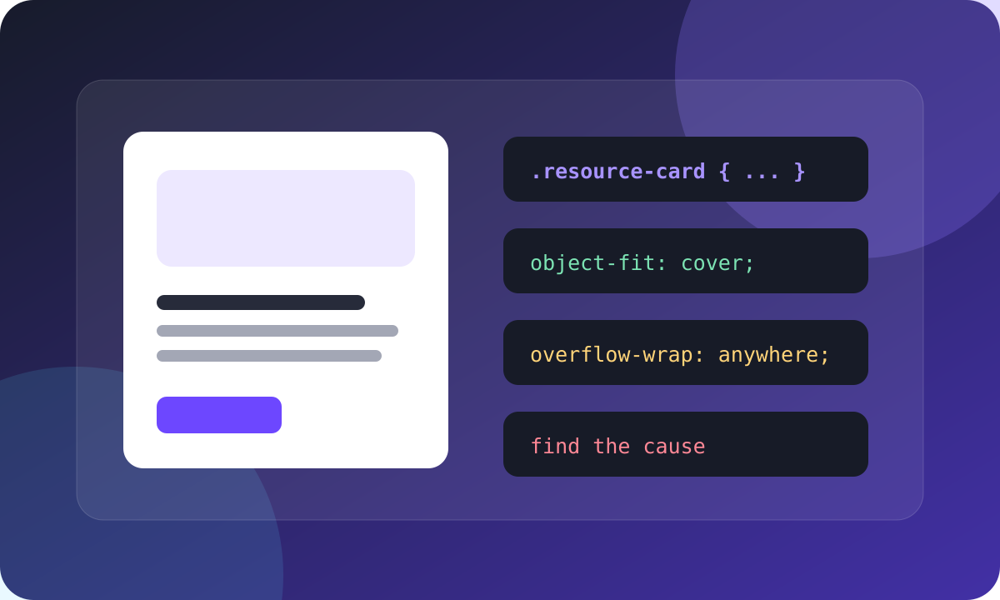

Рекомендуемый материалКаскад, наследование и блочная модель
Короткое руководство о том, как браузер выбирает правило и почему элемент иногда становится шире родительского контейнера.
https://frontend.example.edu/resources/css/cascade-inheritance-and-the-complete-box-model-guide-for-beginners